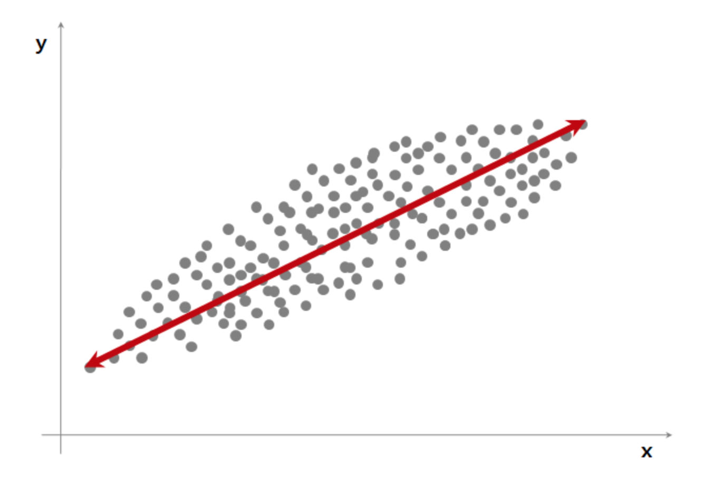
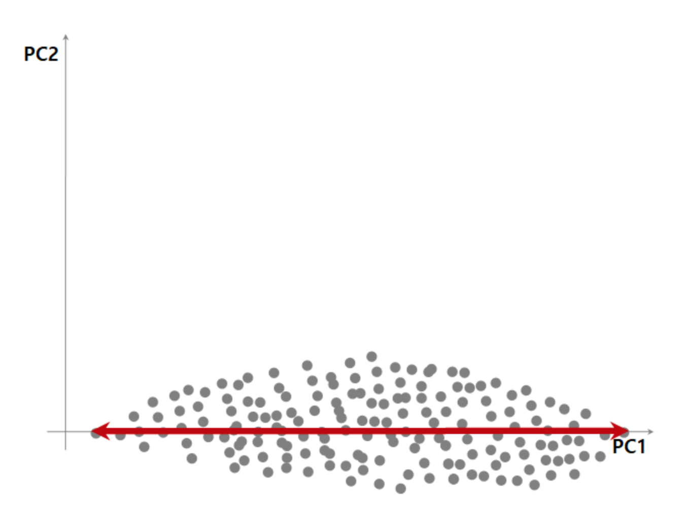
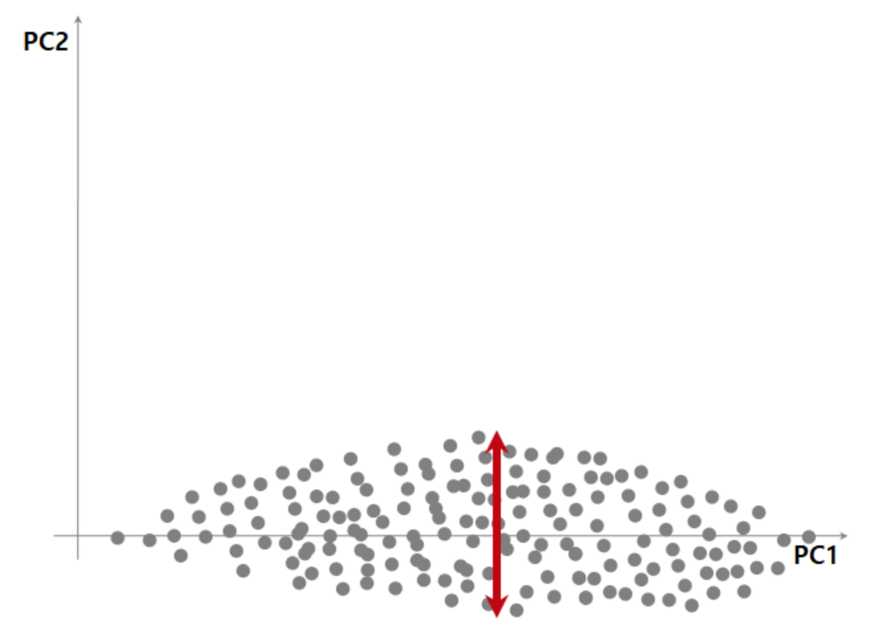

PCA
Summary
- PCA는 주성분 분석이라고 하며 고차원의 데이터 집합이 주어졌을 때 원래의 고차원 데이터와 가장 비슷하면서 더 낮은 차원의 데이터를 찾아내는 방법이다.
- 주성분 추출 방법 데이터에서 분산이 가장 크게 되는 축을 제 1주성분이라고 한다. 그 다음으로 분산이 큰 축은 제 1주성분과 직교하는 선이고 이 축이 제 2주성분이 된다. 이런 식으로 변수의 주 성분을 뽑게 된다.
공분산행렬의 주요벡터는 최대 분산의 방향이 된다. (고유값이 큰 값과 매칭되는 고유벡터는 분산이 큰 방향이다.) 후속 고유벡터는 이전에 계산한 것과 직교를 이룬다는 제약하에 계산할 수 있다. 공분상의 교유벡터 세트는 새로운 feature 세트에 대응한다.
𝑁개의 𝑀차원 데이터가 있으면 보통 그 데이터들은 서로 다른 값을 가진다. 하지만 이러한 데이터들 간의 변이(variation)는 무작위가 아니라 특정한 규칙에 의해 만들어지는 경우가 있다. 이러한 데이터간의 변이 규칙을 찾아낼 때 PCA를 이용할 수 있다.
PCA(Principal Component Analysis)는 주성분 분석이라고도 하며 고차원의 데이터 집합이 주어졌을 때 원래의 고차원 데이터와 가장 비슷하면서 더 낮은 차원의 데이터를 찾아내는 방법이다. 차원축소(dimension reduction)라고도 한다.
바로 측정되지는 않지만 측정된 데이터의 기저에 숨어서 측정 데이터를 결정짓는 데이터를 잠재변수(latent variable)이라고 부른다. PCA에서는 잠재변수와 측정 데이터가 선형적인 관계로 연결되어 있다고 가정한다. 즉, 𝑖번째 표본의 측정 데이터 벡터 의 각 원소를 선형조합하면 그 뒤에 숨은 𝑖번째 표본의 잠재변수 의 값을 계산할 수 있다고 가정한다. 이를 수식으로 나타내면 다음과 같다. 이 식에서 𝑤는 측정 데이터 벡터의 각 원소를 조합할 가중치 벡터이다.
차원축소와 투영
차원축소문제는 다차원 벡터를 더 낮은 차원의 벡터공간에 투영하는 문제로 생각하여 풀 수 있다. 즉, 특이분해에서 살펴본 로우-랭크 근사(low-rank approximation) 문제가 된다. 이 문제는 다음과 같이 서술할 수 있다.
𝑁 개의 𝑀 차원 데이터 벡터 를 정규직교인 기저벡터 로 이루어진 𝐾 차원 벡터공간으로 투영하여 가장 비슷한 𝑁 개의 𝐾 차원 벡터 를 만들기 위한 정규직교 기저벡터 를 찾는다.
근사 성능을 높이기 위해 직선이 원점을 지나야한다는 제한조건을 없애야 한다. 따라서 문제는 다음과 같이 바뀐다
𝑁개의 𝑀차원 데이터 벡터 에 대해 어떤 상수 벡터 를 뺀 데이터 벡터 를 정규직교인 기저벡터 로 이루어진 𝐾차원 벡터공간으로 투영하여 가장 비슷한 𝑁개의 𝐾차원 벡터 를 만들기 위한 정규직교 기저벡터 와 상수 벡터 를 찾는다.
𝑁개의 데이터를 1차원 직선에 투영하는 문제라고 하면 원점을 지나는 직선을 찾는게 아니라 원점이 아닌 어떤 점 𝑥0을 지나는 직선을 찾는 문제로 바꾼 것이다.
이 문제의 답은 다음과 같다.
는 데이터 벡터 의 평균벡터이고 는 가장 큰 𝐾 개의 특잇값에대응하는 오른쪽 특이벡터 이다.
PCA의 수학적 설명
𝐾 차원의 데이터 𝑥가 𝑁개 있으면 이 데이터는 특징 행렬 로 나타낼 수 있다. 이 데이터를 가능한한 쓸모있는 정보를 유지하면서 더 적은 차원인 𝑀(𝑀<𝐾) 차원의 차원축소 벡터 𝑥̂ 으로 선형변환하고자 한다. 예를 들면 3차원 상의 데이터 집합을 2차원 평면에 투영하여 새로운 데이터 집합을 만들 때 어떤 평면을 선택해야 원래의 데이터와 투영된 데이터가 가장 차이가 적을까? 이 평면을 찾는 문제와 같다. 여기에서는 설명을 단순하게 하기 위해 데이터가 원점을 중심으로 퍼져 있다고 가정한다. 데이터가 원점을 중심으로 존재하는 경우에는 벡터에 변환행렬을 곱하는 연산으로 투영 벡터를 계산할 수 있다. 다음처럼 데이터 𝑥에 변환행렬 을 곱해서 새로운 데이터 를 구하는 연산을 생각하자.
모든 데이터 𝑥𝑖(𝑖=1,⋯,𝑁)에 대해 이러한 변환을 할 경우에는 행렬식으로 바꿀 수 있다.
이 식에서 행렬 𝑋는 벡터 를 행으로 가지는 행렬이고 행렬 𝑋̂ 는 벡터 를 행으로 가지는 행렬이다.
PCA의 목표는 변환 결과인 차원축소 벡터 정보가 원래의 벡터 가 가졌던 정보와 가장 유사하게 되는 변환행렬 𝑊 값을 찾는 것이다.
그러나 는 𝑀(<𝐾)차원 벡터로 원래의 𝐾차원 벡터 와 차원이 다르기 때문에 직접 두 벡터의 유사도를 비교할 수 없다. 따라서 를 도로 𝐾차원 벡터로 선형 변형하는 역변환행렬 도 같이 찾아야 한다. 그러면 원래의 데이터 벡터 𝑥를 더 낮은 차원의 데이터 𝑥̂ =𝑊𝑥으로 변환했다가 다시 원래의 차원으로 되돌릴 수 있다. 도로 𝐾차원으로 변환된 벡터를 라고 하자.
물론 이렇게 변환과 역변환을 통해 원래의 차원으로 되돌린 벡터 𝑈𝑥̂ 은 원래의 벡터 𝑥와 비슷할 뿐 정확히 같지는 않다. 다만 이 값을 다시 한번 차원 축소 변환하면 도로 𝑥̂ 가 된다. 즉
따라서 𝑊와 𝑈는 다음 관계가 있다.
역변환행렬 𝑈을 알고 있다고 가정하고 역변환을 했을 때 원래 벡터 𝑥와 가장 비슷해지는 차원축소 벡터 𝑥̂ 를 다음과 같이 최적화를 이용하여 찾는다.
증명 생략 남은 문제는 최적의 변환 행렬 𝑊을 찾는 것이다. 이 경우의 최적화 문제는 다음과 같이 된다.
모든 데이터에 대해 적용하면 목적함수는 다음처럼 바뀐다.
랭크-𝐾 근사문제이므로 W는 가장 큰 𝐾 개의 특잇값에 대응하는 오른쪽 특이벡터로 만들어진 행렬이다.
주성분 추출 방법

위 그래프에서 가장 폭 넓게 데이터를 표현할 수 있는 축은 x축, y축도 아닌 대각선으로 그려진 빨간선일 것이다. 가장 폭이 넓다는 것은 통계량으로 표현하자면 분산이 가장 크게 되는 축이라고 말할 수 있다. (분산 = 넓게 펴진 정도)
데이터를 가장 폭 넓게 설명할 수 있는 축을 PC1, 제 1주성분이라고 한다. 이 축은 x축, y축도 아니고 두 변수의 값을 조합해서 만든 새로운 축 = 새로운 변수이기 때문에 PCA를 변수 추출의 한 방법이라고 하는 것이다.

제 2 주성분, PC2는 제 1 주성분의 영향을 뺀 후, PC1을 찾을 때 처럼 그 다음으로 가장 주요한 성분을 찾는 것이다. 제 1주성분을 x축이 되도록 돌리면 제 1주성분의 영향이 0이 된다.

이 상태에서 가장 분산이 큰 축은 x축이 된 제 1주성분과 직교하는 선일 것이다. 이 축이 PC2, 제 2 주성분이 된다.
이런 식으로 변수의 주성분을 뽑게 된다. 차원이 많은 데이터의 경우 PCA, 주성분 분석을 이용해서 적은 수의 변수로도 이 데이터를 표현할 수 있기 때문에 시각화를 위해서 많이 사용하게 된다.
Scikit-Learn의 PCA 기능
Scikit-Learn 의 decomposition 서브패키지는 PCA분석을 위한 PCA 클래스를 제공한다. 사용법은 다음과 같다.
- 입력 인수:
n_components: 정수
- 메서드:
fit_transform: 특징행렬을 낮은 차원의 근사행렬로 변환inverse_transform: 변환된 근사행렬을 원래의 차원으로 복귀
- 속성:
mean_: 평균 벡터components_: 주성분 벡터
예시_1.
다음 코드는 붓꽃 데이터를 1차원으로 차원축소(근사)하는 예제 코드이다.
fit_transform 메서드로 구한 X_low는 1차원 근사 데이터의 집합이다. 이 값을 다시 inverse_transform 메서드에 넣어서 구한 X2는 다시 2차원으로 복귀한 근사 데이터의 집합이다.
from sklearn.decomposition import PCA
pca1 = PCA(n_components=1)
X_low = pca1.fit_transform(X)
X2 = pca1.inverse_transform(X_low)
데이터의 평균값은 mean_ 속성으로 볼 수 있다.
pca1.mean_
주성분 벡터 즉, 가장 근사 데이터를 만드는 단위기저벡터는 components_ 속성에서 구할 수 있다.
pca1.components_
주성분 벡터 값은 평균을 제거한 특징행렬의 첫번째 오른쪽 특이벡터 또는 그 행렬의 공분산행렬의 첫번째(가장 큰 고윳값에 대응하는) 고유벡터에 해당한다. 고유벡터의 부호 즉 방향은 반대가 될 수도 있다.
1) NumPy로 첫번째 오른쪽 특이벡터 구하기
X0 = X - X.mean(axis=0)
U, S, VT = np.linalg.svd(X0)
VT
VT[:, 0]
2) 고유값 분해 - NumPy가 고유값의 순서에 따른 정렬을 해주지 않으므로 사용자가 정렬해야 한다.
XCOV = X0.T @ X0
W, V = np.linalg.eig(XCOV)
W
V
V[:, np.argmax(W)]
이미지 PCA
주성분이 나타내는 얼굴을 아이겐페이스(Eigen Face)라고도 한다.